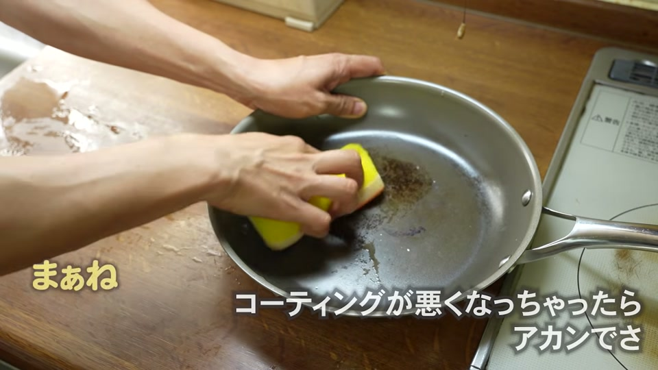
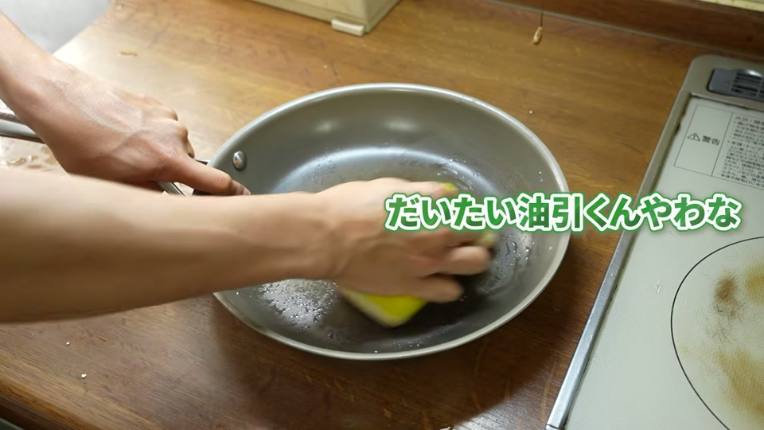
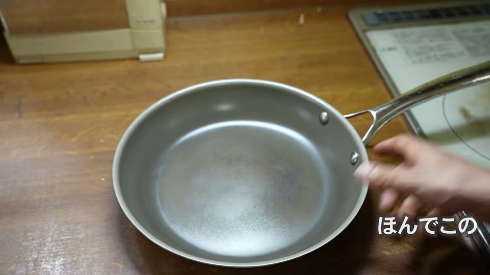
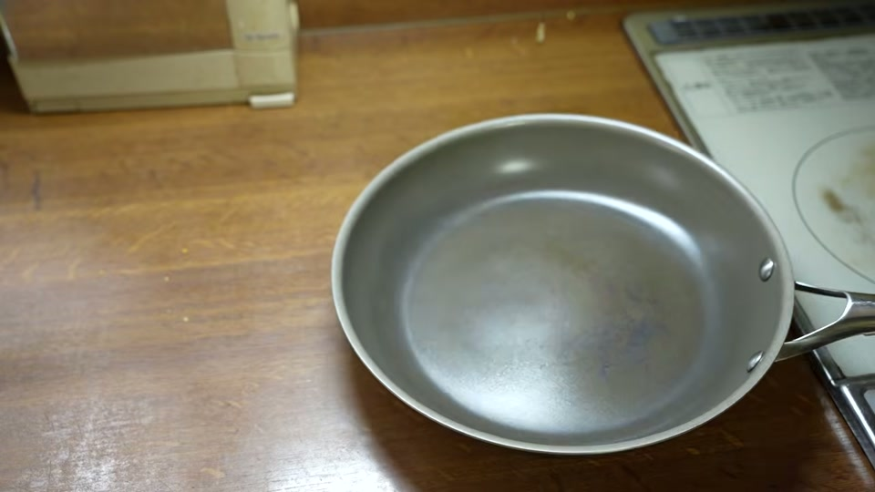
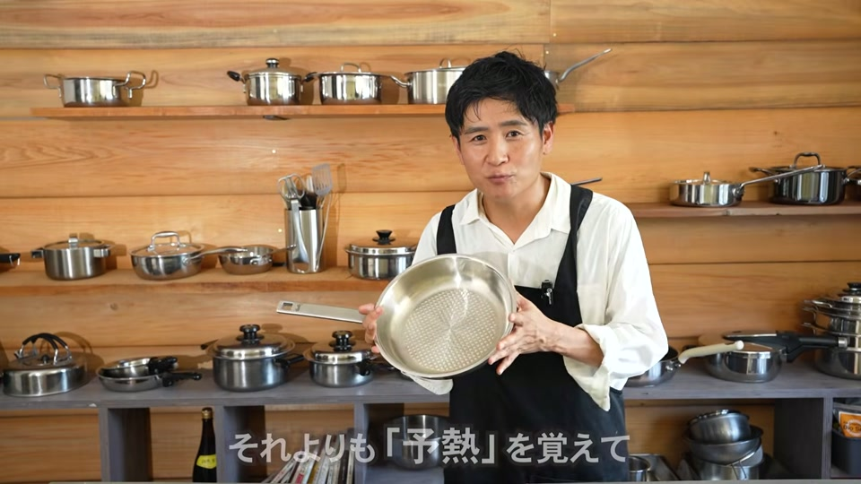

フッ素樹脂（テフロン）を使わない安全なフライパンとして人気の「コレール（CORELLE）フライパン」。購入を検討する中で、「本当にくっつかないのか」「どれくらい長持ちするのか」気になっている方も多いのではないでしょうか。
結論からお伝えすると、コレールフライパンはPFASフリー（フッ素不使用）の中で高品質な製品であるものの、強火で日常的に使い続けると1年ほどで焦げ付きやくっつきが発生します。
この記事では、コレールのフライパンを強火で1年間ハードに使った検証結果をもとに、焦げ付きの原因や長持ちさせるコツ、そしてフライパンの買い替えループから抜け出す方法を分かりやすく解説します。
結論：強火で1年使うとコレールでも焦げ付き・くっつきが発生する

コレールのフライパンはフッ素樹脂不使用で安全性に配慮された優秀な製品ですが、強火で毎日使用すると約1年でコーティングの熱劣化が進み、食材がくっつくようになります。
実戦テストとして、父親に強火（IH高出力・ダイヤル5など）で毎日2回、1年間自由にコレールフライパンを使ってもらったところ、中央部分に焦げが蓄積し、手入れ後もくっつきが再発する状態になりました。
どんなに優れたコーティングフライパンであっても、「強い火力による熱負荷」をかけ続けると寿命を縮めてしまうのが現実です。
1. コレール（Corelle）フライパンを強火で1年間使ったリアルな検証結果

1年間、強火で酷使したコレールのフライパン（26cm）の状態は以下の通りです。
- 見た目の変化：調理面の中央付近に黒ずみや蓄積した焦げ付きが確認できる
- 調理時の状態：油を引いても食材が中央にくっつきやすくなり、滑りが悪くなる
- 手入れ後の変化：温水で汚れを緩めて磨き落とした直後は一時的にきれいになるが、再度調理に使うとすぐに焦げ付きが再発する
このように、表面の汚れを一度落としたとしても、熱によってコーティングの機能自体が劣化している場合は、本来の「くっつかない効果」を取り戻すことはできません。
2. なぜくっつく？コレールフライパンの焦げ付き原因

コレールフライパンが焦げ付くようになる主な原因は、以下の2点によるダブルパンチです。
① 高火力（IH高出力）による熱劣化
コレールのフライパンは下地にステンレスが使用されています。ステンレスはアルミ製フライパンに比べて熱保持力が高いため、強火で加熱すると調理面が非常に高温になり、コーティングに大きな熱負担がかかります。その結果、コーティングの劣化が早まってしまいます。
② コーティング表面への焦げ付き汚れの蓄積
微小な焦げや油汚れが表面に付着・蓄積すると、その部分から食材がくっつきやすくなります。
| 原因 | 状態 | 影響 |
|---|---|---|
| 高火力による熱負荷 | コーティング自体の加熱劣化 | 元に戻らない（寿命） |
| 汚れの蓄積 | 表面に焦げ付きが層として残る | 磨けば一時的に改善する場合もある |
3. コレールフライパンを長持ちさせるための適切な使い方

コレールフライパンをできるだけ長く愛用したい場合は、以下のポイントを徹底することが重要です。
- 強火を避け、中火〜弱火で調理する
IHクッキングヒーターを使用する場合は、1000W以上の高出力を避け、800W程度の中火〜弱火で丁寧に扱いましょう。 - 空焚きをしない
高温での空焚きはコーティングを急速に傷める原因になります。 - 柔らかいスポンジとお湯で洗う
汚れは放置せず、使用後に温水で浮かせてから柔らかいスポンジで優しく洗い流します。金たわしなどで擦るとコーティングに傷がつきます。
火加減さえ適切にコントロールできれば、寿命を大きく延ばすことが可能です。
4. 「くっつかず長持ちする完璧なフライパン」は存在しない理由

多くの方がフライパンに以下の4点を求めがちです。
- 安さ
- 軽さ
- 焦げ付かない（滑りの良さ）
- 耐久性（一生モノ）
しかし、技術的にこれらすべてを同時に満たすコーティングフライパンは存在しません。
コーティング（表面処理）である以上、摩耗や熱による劣化を避けることはできません。「安くて軽くてくっつかなくて一生使える」という理想のコーティング鍋を探し続けるのは、買い替えループに陥る原因となります。
5. フライパンの買い替えループから抜け出すなら「オールステンレス」がおすすめ
「コーティングが剥がれるたびに買い替えるのがストレス」という方には、オールステンレスフライパンへの移行がおすすめです。
オールステンレスフライパンのメリット
- コーティングがないため寿命がない（一生使える）
- 強火調理やゴシゴシ洗いも可能
- PFASフリーで安全性が高い
ステンレスフライパンは「くっつきやすい」というイメージを持たれがちですが、正しい予熱（しっかり温めてから油をなじませる技術）をマスターすれば、焦げ付かせずに快適に調理できます。
フライパン選びで悩み続けるよりも、予熱のコツを一度身につけることこそが、根本的な解決策になります。
よくある質問（FAQ）
Q1. コレールのフライパンは金たわしで洗っても大丈夫ですか？
A. いいえ、おすすめできません。コーティングが施されているため、金たわしなどの硬い素材でゴシゴシ擦ると表面が傷つき、かえって傷みや焦げ付きの原因になります。お湯で汚れを緩めてから柔らかいスポンジで洗ってください。
Q2. コレールフライパンで強火調理をしても問題ありませんか？
A. 強火調理はコーティングの寿命を縮める大きな原因となります。特にIHの場合は800W以下の中火〜弱火で使用することをおすすめします。
Q3. 焦げ付くようになったコレールフライパンは復活しますか？
A. 表面に付着した汚れを落とすことで一時的に滑りが戻ることもありますが、高熱によってコーティング自体が劣化してしまっている場合は、元どおりに復活させることはできません。
動画で紹介されているアイテム・サービス
動画内で紹介・関連して触れられているアイテムやサービスの一覧です。
- CORELLE 26cm フライパン
- CORELLE フライパン（小さいサイズ）
- 大澤チャンネル インスタグラム
- 大澤チャンネル オリジナル商品サイト
- 安全な浄水器「Re」
- 国産置き型浄水器 beaq
- 予算1万円のおすすめお鍋
- 予算2万円のおすすめお鍋
- ヘンケルス オールステンレス包丁
- 内窯ステンレス炊飯器
- 酵素玄米炊飯器
- ロイヤルクイーン（ステンレス鍋）買取
- オールステンレスフライパン / ステンレス鍋
まとめ
コレールのフライパンは、フッ素樹脂を使わない安全なフライパンとして優れていますが、強火で日常的に使うと約1年で焦げ付きが発生します。
長く使うためには、IHなら800W程度の中火〜弱火を徹底することが大切です。
もし「買い替えの手間やコーティングの劣化から解放されたい」と考えているなら、予熱の技術をマスターしてオールステンレスフライパンへ移行することを検討してみてはいかがでしょうか。